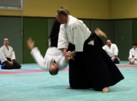
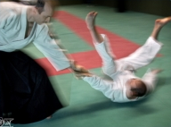
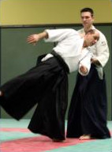
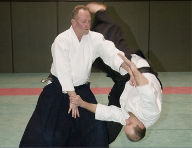

L'aïkido, qu'est-ce que c'est ?
L'Aïkido (合気道) est un art martial qui propose de répondre à une agression sans avoir recours à la violence.
Le principe est d'accompagner l'attaque afin de rendre l'adversaire inoffensif.
La force n'entre pas dans la logique de la pratique. Elle est supplantée par la souplesse, la fluidité, la concentration et la précision du geste.
Bien-être
L'Aïkido participe au maintien d'une bonne santé, tant physique que mentale.
Les mouvements respectent l'intégrité du corps et développent des qualités bien spécifiques, comme une perception accrue de l'environnement et la prise de recul face aux évènements difficiles. L'enseignement dispensé, d'un niveau technique avancé, permet une évolution constante.
Accessible à toutes et à tous, cette activité apporte énergie et sérénité.
Esprit des arts martiaux
Structurée autour de valeurs fortes, c'est une discipline sans compétition qui aide à (re)trouver le calme et un équilibre harmonieux, à mieux gérer le stress, loin du quotidien.
Confiance et plaisir
La pratique de l'Aïkido accroît la confiance en soi. Elle sera vécue au sein d'un club qui favorise les échanges et la convivialité, et où chacun progresse à son rythme.
Comment se pratique l'Aïkido ?
L'Aïkido utilise des techniques de projections et d'immobilisations avec un ou plusieurs partenaires, armés ou non. La progression est ponctuée par des passages de grades (KYU et DAN).
Une séance comprend 3 phases : La préparation physique et mentale, l'expérimentation des principes au travers du travail des techniques et le retour au calme.
L'Aïkido se pratique avec un partenaire, et non contre un adversaire.
- 5 septembre 2017 : reprise des cours adulte
- 10 septembre 2017 : démonstration et permanence au forum des associations de Vernon
- 14 septembre 2017 : reprise des cours enfant (Cours assuré à 18h00 le jeudi)
{kind=link}
{kind=link}